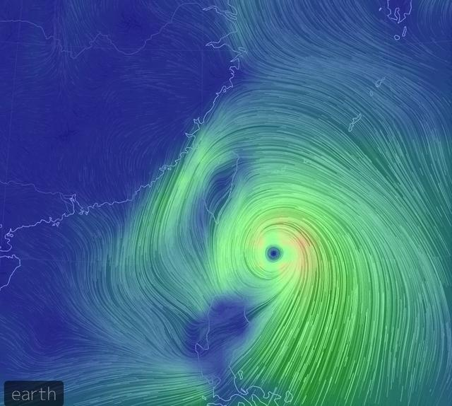
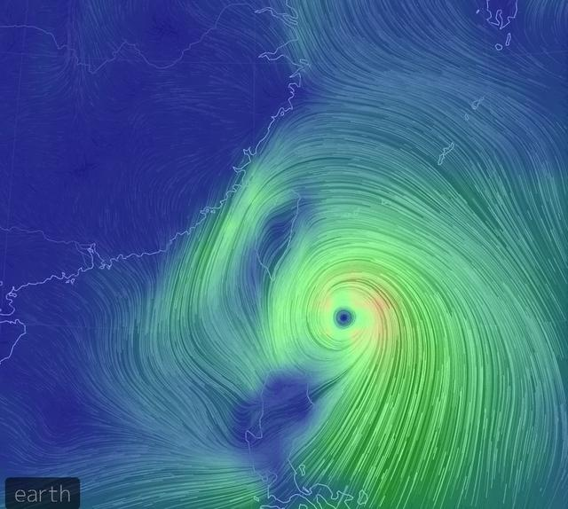
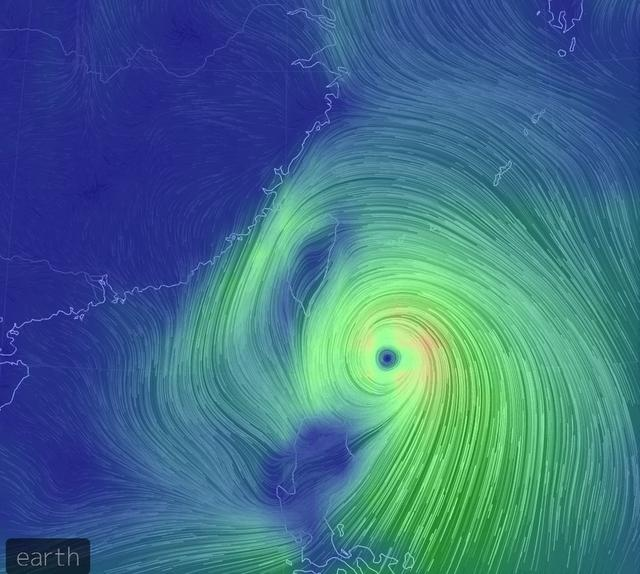

NetCDF to Professional Map
Immediately
Whether you need to quickly view a NetCDF file or create a beautiful scientific map, this tool is designed for you!
 

Whether you need to quickly view a NetCDF file or create a beautiful scientific map, this tool is designed for you!
